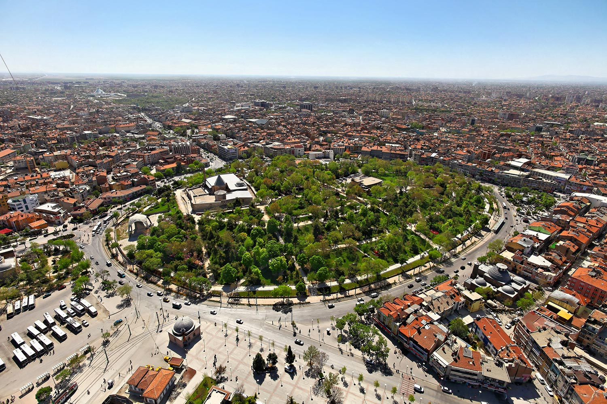

Home |
Local Dishes |
Historical Places |
Useful Links |
About Me |
Contact Me |
Registration |
|---|---|---|---|---|---|---|
Konya is a city in Central Anatolia in Turkey which has protected its name for centuries. Legend says that Perseus killed a dragon that had been ravaging the town. The people set up a special monument to honor him, a stone obelisk with an icon of Perseus carved in it. This event gave the city it's name, Ikonyon, Ikonyum, Iconium.
Archaeology shows that the Konya region is one of the most ancient settlements of Anatolia. The results of excavations in Catalhöyük, Karahöyük, Cukurkent and Kucukoy show the region was inhabited as far back as the Neolithic Period (Late Stone Age) of BC 7000. Other settlers of the city before Islam were; the Calcolitic Period (Copper Age) civilizations, Bronze Age civilizations, Hittites, Frigians, Lidians, Persians, Romans and finally Byzantines.
Konya is a city identified with the world famous philosopher Mevlana, İt is one of the first inhabited cities in the history of mankind, and still contains traces of many ancient civilisations which gives it the atmosphere of a museum city. Because of its locations in the middle of the barren Anatolian steppe, it used to be one of the most important trading centres on the Silk Road. The fertile land around the city means Konya is also the heart of Turkey’s grain industry, with farming a major industry. Steeped in tradition, it is one of the most conservative and religious places in the country, and best known as the adopted home of Celaleddin Rumi, the Sufic mystic who founded the Whirling Dervish sect. Today it is still a centre of Sufic practice and teaching, and one of the highlights for visitors is the Mevlana Museum, the former lodge of the dervishes. Although Konya is one of the world's most ancient cities, it is most famous as the capital of the Seljuk Sultanate of Rum from 1097 to 1243, when the city acquired most of the monuments of interest to the visitor. In addition to royal foundations of the Seljuks, Konya also attracted at this time the famous Islamic poet and philosopher Jalal al-din Rumi (1207-1273), the founder of the Mevlevi Sufi Order. After the fall of the Seljuk Sultanate, Konya continued to receive adornments from the rulers of near-by Karaman until the entire area was conquered by the Ottomans in 1468. Following the Ottoman conquest, Konya became a provincial capital and most of the Ottoman architecture in Konya consists of buildings originally dating from Seljuk or Karamanid times which were later rebuilt by the Ottomans. Today, Konya is one of Turkey's major industrial cities, one of the rapidly growing "Anatolian tigers" of Turkey's emerging industrial heartland. Konya has terrestrial climate with tough winters (cold and snowy) and hot and dry summers. Annual average temperature is 11.5°C. The hottest temperature is 40°C and the lowest is -28.2°C. There is fog for about 23 days and annual average rainfall is 326 mm.
The around of city looks that:Ancient mosques and the maze-like market district rub up against contemporary Konya around Alaaddin Tepesi , tea gardens where people can talk.
One of the interesting attraction in Konya is the Tropical Butterflies Park which was opened in July 2015. Being the first of its kind in Turkey, the Park provides shelter to 6,000 butterflies of 15 different species, as well as 20,000 tropical plants.